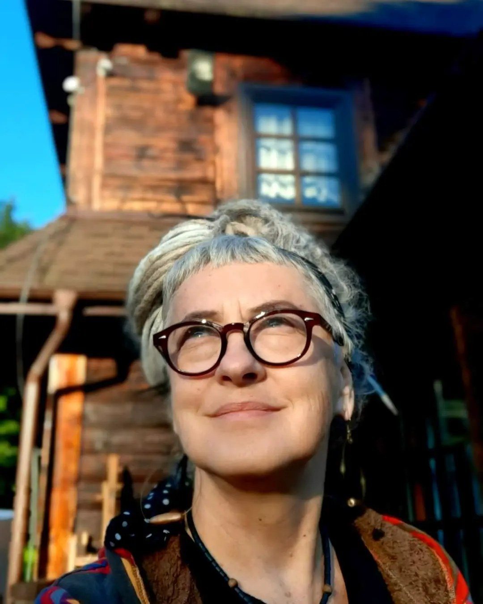
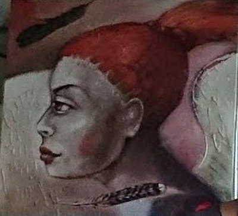
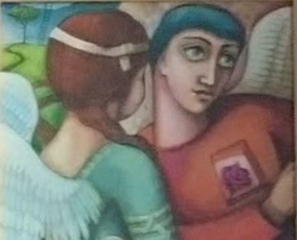
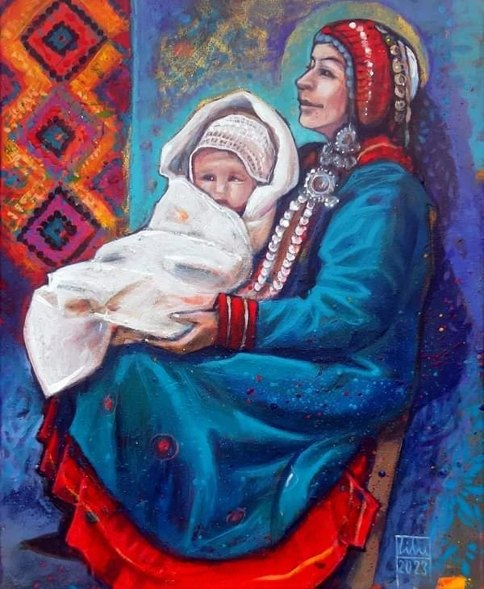
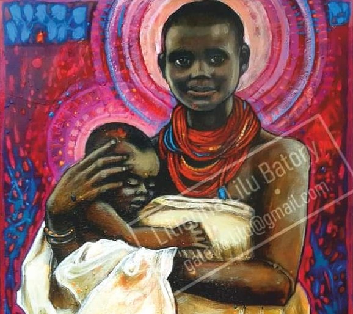
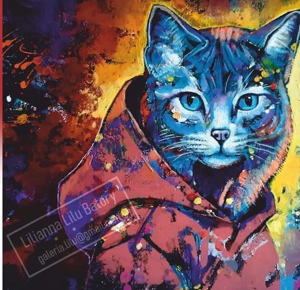
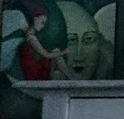
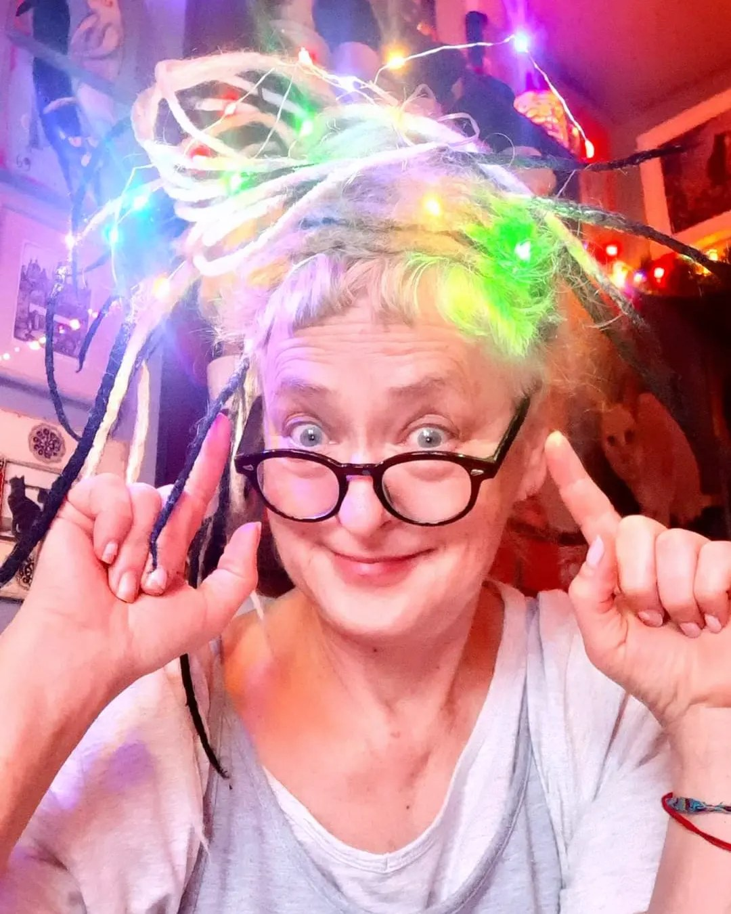

Galeria Lilu · pracownia malarska w Zielonej Górze
Lilianna Lilu Batory
Maluję anioły z ludzką twarzą, Madonny świata i koty z charakterem. Obrazy i portrety także na zamówienie.
Od artystki
Grafika i malarstwo to moje największe pasje. Najczęściej maluję anioły, ale inne od tych, o których uczą mity czy religie – takie, które są blisko nas. Mają ludzkie twarze, marzenia i problemy.
Maluję cyklami. Jest wśród nich 366 aniołów, po jednym na każdy dzień roku, dwanaście Madonn świata i cała Kocia Ludzkość. Każdy obraz niesie inne emocje, ale wyjątkowe.
Zapraszam do mojej pracowni i do rozmowy o obrazie dla Ciebie albo dla kogoś bliskiego.
Anioły z ludzką twarzą
Zapraszam do rozmowy o Twoim Aniele Stróżu. Takim, który ochroni, doda odwagi i będzie czuwał nad bliskimi.
o cyklu 366 obrazów „Anioł Stróż na każdy dzień roku”






Anioł na Twój dzień
W cyklu jest anioł na każdy dzień roku, także na 29 lutego. Wybierz datę urodzin albo imienin.
Madonny świata
Cały cykl 12 obrazów powstał z myślą o kalendarzu na nadchodzący rok. Na dobrą wróżbę, na przywołanie miłości i opieki. Każdy niesie emocje inne, ale wyjątkowe.
Lilianna o cyklu, 2023






Madonna w czerwonej chuście, nad morzem, powstała na podstawie malarstwa Zofii Stryjeńskiej – „wyjątkowa malarka, tak dla ułatwienia, z Polski”.
Kocia Ludzkość
Zabawne, „uczłowieczone” i z charakterkiem kocie pyszczki. Taki kalendarz przyniesie radość na cały rok.
o kalendarzu autorskim Kocia Ludzkość



Twarze
Anioły i ludzie z marzeniami i problemami – takie, które są blisko nas.





Pracownia przy Objazdowej
Tu powstają wszystkie obrazy, warstwa po warstwie. Na ścianach wiszą anioły, portrety i koty, a na sztaludze zawsze coś nowego. Obrazy możesz obejrzeć na żywo – zadzwoń i umów się na wizytę.




Porozmawiajmy o obrazie
Opowiedz, dla kogo ma być obraz i jaki ma mieć nastrój. Odpiszę albo oddzwonię.